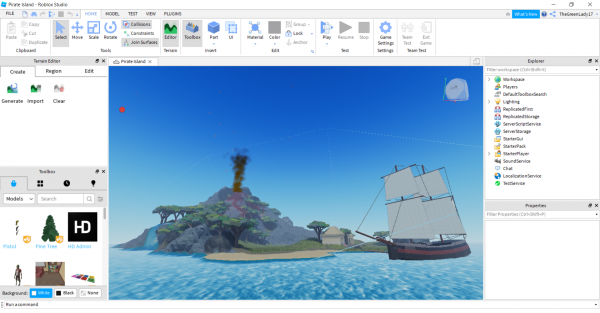

Career

Image from Google
Image from Google
Currently, I am motivated to graduating in the Bachelor's of Applied Computer Science. I am unsure on what I will do after I graduate but I know for a fact that I am interested in this course. The Bachelor's of Applied Computer Science Courses will teach me multiple skills including: problem-solving, communication, and management skills that will go along with my deep understanding in technology. Some of these careers are: security analyst, web developer, and game developer. The career that I am interested in is being a game developer.
Currently, I am using two game development engines/softwares, Unity and Roblox. Unity is a complex game engine that
provides simple yet realistic graphics. Unity gives game developers a 2D or 3D platform to create games. The reason
why Unity is pleasant to use is because it gives models created by game designers to be used.
Another game engine that I use is Roblox. Roblox is an app that allows users to play and create games. I have played this game
for the past 8 years but now, I am more interested in making games for people to enjoy. Here is a photo of a pirate
game being created in Roblox Studio:

Contacts: js800784@dal.ca